u）N（u）＆（x）（N（x）→（y）F（x，y）＆F（x，y）→（N（y））．
u）N（u）＆（x）（N（x）→（y）F（x，y）＆F（x，y）→（N（y））．“可计算”数可以简单地描述为它的小数表示方式可以用有限的手段来计算的实数．虽然表面上这篇文章主要是讨论可计算数，几乎是同样容易地可以定义和讨论整数变元或者是实数或者是可计算变元等的可计算谓词和可计算函数．无论如何，每一种情形所涉及的基本问题是相同的．而我之所以选择可计算数来做详尽的叙述，那是因为这样会牵涉最少的繁琐技巧，我希望能很快地给出可计算数、函数以及其他概念之间的关系的说明．这将包含展开用可计算数来表示的一个变元等的实数函数理论，根据我的定义，如果一个数的小数可以用一个机器写出来，则一个数是可计算的．
在§§9，10我给出一些论断是想用来说明可计算数包含了所有通常被认为是可计算的数，特别地，我指出一些很大的数类是可计算的．它们包含例如所有的代数数中的实数，贝塞尔函数的零点中的实数，以及数π，e等，但是可计算数并不包含所有的可以定义的数，并且给出了一个可以定义但是不可以计算的数的例子．
虽然可计算数类是如此地庞大并且在很多方面和实数类相似，但是它是可数的．我在§8考察某些论断，它们好像是在证明相反的结论．经过正确地运用这些论断中的一个，神奇地得到了和哥德尔[1]类似的结论，这些结果有有价值的应用，特别地证明了（§11）希尔伯特的判定问题无解．
在近来的一篇文章中，丘奇[2]引入了“有效可计算”的想法，它是和我的可计算性等价的，但是定义的方式有很大的不同，丘奇也得到了关于判定问题的类似结论．[3]在这篇文章的一个附录中给出了“可计算性”和“有效可计算性”之间等价的证明框架．
我们说过，可计算数是它们的小数表示可以用有限的手段来计算的数．这一点要更加精确地定义．在我们到达§9之前，我们还不能对这个定义的合理性做实质上的判断．现在我们只能说这个合理性的判断有赖于人类的记忆库应该是有限制的．
我们可以将一个人在计算一个实数的过程和一个机器相比较，后者只能有有限数个条件q1，q2，…，qr，它们叫做“m配置”．机器提供一条带（类似于纸条）从机器中运行穿过，并且划分为节（叫做“方格”），每一个方格可以载入一个“记号”，在每一瞬间恰好有一个方格，比如说第r个方格，载入表示符号S（r）是“在机器之内”．我们可以把这个方格叫做是“被扫描的方格”．在被扫描的方格里的记号可以叫做是“被扫描的记号”．可以这样说“被扫描的记号”是唯一的机器“直接认知”的记号，当然利用变换m配置可以让机器有效地记住一些机器在这之前曾经“见”过的记号，在每一瞬间机器可能的行为取决于它的m配置qn和被扫描的记号S（r）．由qn，S（r）所组成的对就叫做配置：因此配置决定机器可能的行为．在某些配置之下，被扫描的记号是空白时，（也就是说方格里没有记号时），机器在空白的方格里写下一个新的记号，在另外的配置之下机器擦去被扫描的记号．机器可以变换被扫描的方格，但是只能向左边移动一格或者向右边移动一格．除了这些动作之外可以更换m配置．所写下的记号中有一些是来自所计算的实数的小数数字系列．另一些仅仅是“帮助记忆”的草稿，只有这些草稿将要被消掉．
我的论点是这些操作涵盖了用于计算一个数的全部操作．当读者熟悉了这个机器的理论之后再来说明这个论点会比较容易一些，所以我在下一节进行理论的展开并且认为大家已经懂得了“机器”，“带”，“扫描”等的含义．
自动机
如果在每一个阶段机器的动作（在§1的意义之下）完全由配置所确定，我们将这种机器叫做“自动机”（或者a机器）．
为了某些目的我们可能使用机器（选择机或者c机器）它的动作只是部分的被配置所决定（所以在§1我们用“可能的行为”的说法）．当这样的一个机器走到一个这种含混的配置时，它必须等到一个外在的运算子做出任意的选择才能继续运转下去，这就是我们使用机器来处理公理化系统的情形．在这篇文章里我只处理自动机，所以我们常常省略前缀a-．
计算的机器
如果一个a-机器打印两类记号，其中第一类（叫做数字）整个地由0和1所组成，（其他的符号叫做第二类符号），那么这种机器叫做计算的机器．如果机器备有一条空白的带并且从正确的m初始配置启动，它所打印出的子序列是第一类的记号叫做是机器所计算的序列．在这个序列的前面放上一个小数点所得到的二进位序列所代表的实数叫做机器所计算的数．
在机器运转的任何阶段，扫描方格的数字，带上所有记号的完全序列，以及m配置称为描述了这一阶段的完整的配置．机器在相邻的两个完整的配置之间的变化叫做机器的一个动作．
循环的和无循环的机器
如果一个计算的机器写下的第一类记号的数目永不超过一个固定的有限数，它就叫做循环的机器，不是这样的机器就叫做无循环的机器．
如果一个机器走进了一个不可能继续运行的配置，或者它继续运行但是不再打印更多的第一类记号而是打印第二类记号，它就是循环的机器．词语“循环”的重要性将在§8加以解释．
可计算的序列和数
一个序列叫做是可以计算的，如果它可以被一个无循环的机器来计算．一个数是可计算的，如果它和一个由无循环机器计算出来的数相差一个整数．
为了避免混淆，我们使用可计算序列多于可计算数．
I．可以构造一个机器计算序列010101…．机器有4个m配置“b”，“c”，“k”，“e”并且可以打印“0”，和“1”．机器的运行状况用下面的表格来描述，其中“R”表示机器要扫描紧挨着已经扫描过的方格右边的一个方格，“L”的解释类似，“E”是说要擦掉被扫描的记号而“P”表示“打印”，这个表格（以及随之而来的同样类型的表格）理解为一个在表格的第一二列所描述的配置机器的运转是依次做表格的第三列上的动作然后机器进入表格的最后一列所描述的m配置．当在第二列留下空白时，这就理解为第三列和第四列可以是任何记号或者没有记号．机器从m配置b开始带子是空白的．
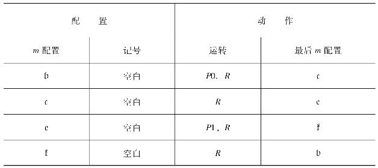
如果（和§1的描述相反）我们允许字母L和R在运转列出现一次以上，那么我们就可以大大地简化表格．
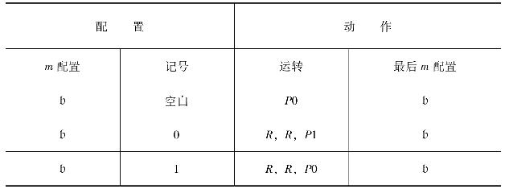
Ⅱ．作为一个稍微困难一点的例子我们可以构造一个机器用来计算序列001011011101111011111…．机器设有5个m配置“o”，“q”，“p”，“f”，“b”和打印“∂”，“x”，“0”，“1”的能力，带子上的前3个记号是“∂∂0”；其他的数字放在跟随着的交替的方格．紧随的方格我们只打印“x”，其他什么也不打印，这些字母被用来替我们“保持位置”，并且在它们完成任务之后被擦掉，我们也安排数字的序列在相间的方格中使得没有空格．
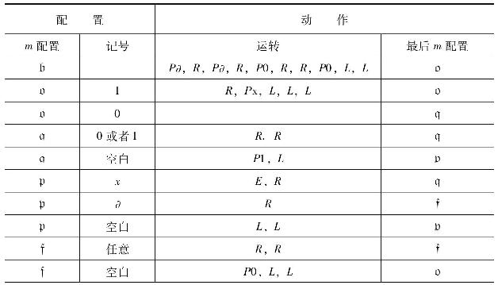
为了说明这个机器的工作方式，给出下面的表格用以表示开头几个完整的配置，这些完整的配置是用写下它们在纸带上的记号序列来呈现的，而它们的m配置就写在它们所扫描的记号下面，紧挨着的配置用冒号分隔开来．
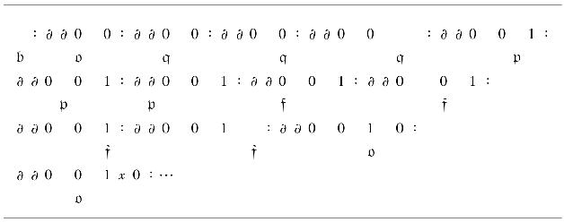
这个表格也可以用下面的形式写出来
b：∂∂o 0 0：∂∂q 0 0：… （C）
其中被扫描符号的左边让出一个空间用以写入m配置．这种形式虽然不太容易理解，但是后面我们要用它来说明理论上的问题．
规定数字是隔一相间的方式来写是很有用的：我总是用这个办法．这个由隔一相间的方格所组成的序列我把它叫做F方格而其他的序列叫做E方格．E方格上的记号是准备要消去的．在F方格上的记号形成一个连续的序列，在没有到达终点以前是没有空格的，每对相邻的F方格之间不需要有一个以上的E方格，表面上需要一个以上的E方格可以用足够多品种的记号用来印入E方格，如果一个记号β是在一个F方格S内而一个记弓α是在与S右侧相邻的方格内，那么S和β就称为做上了记号α．打印这个α的过程就叫做将S（或者β）做上记号α．
有一些类型的过程几乎在所有的机器中都会用到，并且这些过程在某些机器中会以多种不同的方式来应用．这些过程包括复制记号的序列，比较序列，消去全部给定的某种形式的记号等．考虑到这种过程，我们可以用“骨架表”的办法来极大地简化表格中的m配置，在骨架表中出现有大写的德文字母和小写的希腊字母，用一个m配置来代替表格中的大写德文字母，再用一个符号来代替表格中的小写希腊字母，就可以得到一个m配置的表格．
骨架表可仅仅理解为简记号：它们没有什么本质上的问题，只要读者知道如何将一个骨架表翻译成原来的表，就不需要给出对这种联系的额外定义，让我们考虑下面的例子：
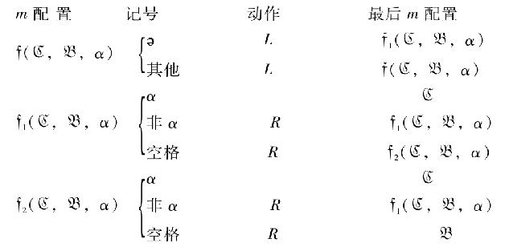
从m配置f（C，B，α）机器寻找最左边的α形式的记号，找到后，机器进入m配置C（第一个α），如果找不到这样的一个记号，机器进入m配置
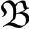
．如果（譬如说）我们是想将全部的
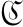
替换成q，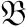
替换成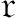
，α替换成x，我们就会有一个关于m配置（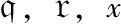
）的完整的表格．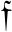
叫做“m配置函数”或者“m函数”．在一个m函数的表达式中只有那些m配置和机器的符号是允许替换的．那些表达式需要枚举得或多或少清晰一些：它们可能含有像p（e，x）这样的表达式；如果有任何的m函数可以使用就应该有这种表达式．如果我们不坚持这样清晰的枚举，而简单地认为机器有某些（枚举出来的）m配置和所有从某些m函数中替换m配置得来的m配置，我们通常会得到无限多个m配置；例如我们可能说机器想要得到m配置q并且所有m配置是由在p（C）中用m配置替换C而得到的，那么就有m配置q，p（q），p（p（q）），p（p（p（q）））…．
因此我们对规则做如下的解释：我们给出机器的m配置的名字，大部分使用m函数来表示．我们也给出一些骨架表，所有我们需要的就是机器的完整的m配置表，这就可以在骨架表中反复替换而得到．
更多的例子
（“→”记号是用来表示“机器进入到m配置……”）
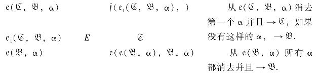
最后一个例子好像是比起大部分的例子来多少有点难于解释．让我们假设在某个机器的m配置清单中出现有e（b，x）（譬如说=q）．表格是
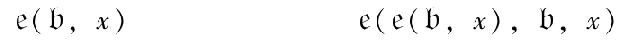
或者
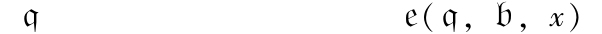
或者，更详细一些：
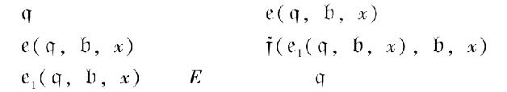
在这里我们可以替换e1（q，b，x）以q′，然后给出f的表（使用右替换）最后得到一个不出现m函数的表．
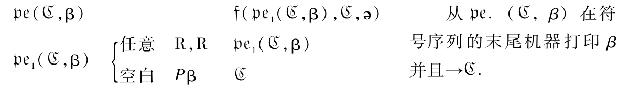
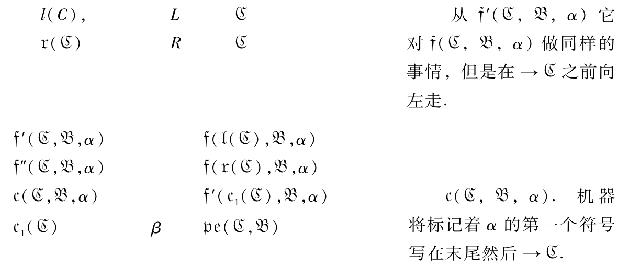
最后一行是代表所有可能的行，它们是由相关的机器的带上可能出现的符号代入β而得到的．
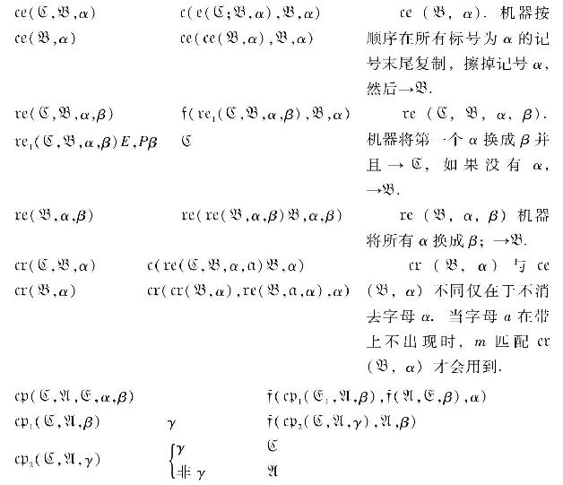
将第一个标记为α的记号和第一个标记为β的记号进行比较．如果α和β都不存在，→E；如果两个符号相同，→C，余下的情况，→A．
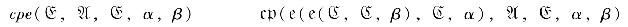
cpe（C，A，E，α，β）与cp（C，A，E，α，β）不同．如果查出是相同时，第一个标记为α的记号和第一个标记为β的记号都要消掉．
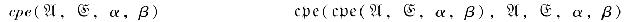
cpe（A，E，α，β）．将标记为α的记号序列和标记为β的记号序列进行比较，如果它们相似，→E．否则→A，有些标记为α，β的记号要消去．
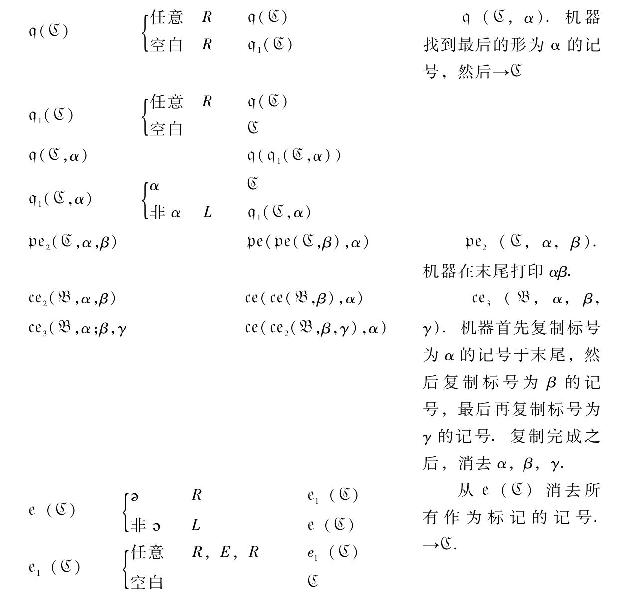
一个可计算序列γ是被一个计算γ的机器的一个描述所确定．所以§3中的序列001011011101111…就由计算它的表格所确定，事实上任何可计算序列都可以被一个这样的表格所描述．
将这种表格设定一种标准的形式会是很有用的，首先我们假设这种表格是用同第一个表格相同的一种形式给出的，如前面§3的例子1．这就是说在动作列上的数据总是下面的形式之一E∶E，R∶E，L∶Pα∶Pα，R∶Pα，L∶R∶L∶或者什么数据也没有，表格总是可以引入更多的m匹配来做成这种形式，现在让我们给出数字于m匹配，把它们像在§1那样叫做q1，…，qR．初始的m匹配总是叫做q1．我们也给出数字于记号S1，…，Sm，并且特别地，空格=S0，0=S1，1=S2．表格的各行现在具有下面的形式．
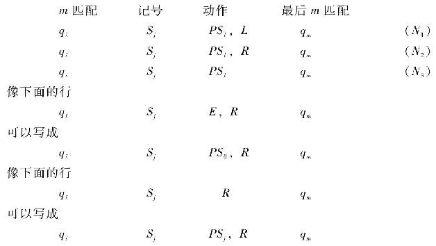
于是，所有原来表中的行都可以写成（N1），（N2），（N3）的形式之一．
从每一个（N1）形式的行我们形成表达式qiSjSkLqm，从每一个（N2）形式的行我们形成表达式qiSjSkRqm，从每一个（N3）形式的行我们形成表达式qiSjSkNqm．
让我们写下所有的如上形成的表达式并且用分号“；”将它们分隔开来．用这个办法我们得到关于机器的一个完整的描述．在这个描述中我们将qi换成字母D，跟着i个重复的字母A，将Sj换成字母D，跟着j个重复的字母C．这个对机器的新的描述可以叫做是标准的描述（S．D）．它完全是由字母“A”，“C”，“D”，“L”，“R”，“N”以及符号“；”组成．
如果最后我们将“A”换成“1”，“C”换成“2”，“D”换成“3”，“L”换成“4”，“R”换成“5”，“N”换成“6”，“；”换成“7”我们得到一个完全用阿拉伯数字组成的关于机器的描述．这些数字所组成的整数叫做机器的一个描述数（D．N）．D．N唯一地决定S．D以及机器的结构．D．N是n的机器可以描述为M（n）．
每一个可计算序列至少对应着一个描述数，然而没有描述数会对应到一个以上的可计算序列．可计算序列和数这样就是可枚举的了．
让我们找到§3机器I的描述数．当我们重新命名m匹配，它的表格成了：
q1 S0 PS1，R q2
q2 S0 PS0，R q3
q3 S0 PS2，R q4
q4 S0 PS0，R q1
同样的机器也可以加上无关紧要的行而得到另外的表格，譬如说：
q1 S1 PS1，R q2
我们的第一个标准形式就是
q1S0S1Rq2；q2S0S0Rq3；q3S0S2Rq4；q4S0S0Rq1；
标准描述是
DADDCRDAA；DAADDRDAAA；DAAADDCCRDAAAA；DAAAADDRDA；
描述数是
31332531173113353111731113322531111731111335317
下面的数也是一个描述数
3133253117311335311173111332253111173111133531731323253117
一个数是一个非循环机器的描述数叫做符合要求的数，在§8证明了没有一个一般的过程来确定一个给定的数是否符合要求．
发明一个单个的机器用来计算任意可计算序列是可能的，如果为这个机器U提供一条带，开始时在它上面写上某一个计算机器M的S．D，那么机器U就会计算和机器M相同的序列．在这一节里我简略地解释这个机器的动作．下一节专门给出机器U的完整的表格．
我们首先假设有一个机器M′，它将M的完整的匹配写在相继的F方格上．这些可以表示成§3机器Ⅱ的第二种描述表达式（C）的形式，所有符号都写成一行，或者，更好一些，（像§5中）将这个描述用更换m匹配成“D”，接上适当数目的重复的“A”，更换数字成“D”，接上适当数目的重复的“C”．字母“A”和“C”的数目符合§5的选择，特别地，使得“0”替换成“DC”，“1”替换成“DCC”，而空格替换成“D”．这些替换是在完整的匹配，像在（C）那样放在一起之后完成的，如果我们先做替换就会产生困难．在每一个完整的匹配中，空格就会被替换成“D”，使得这个完整的匹配不可能表示成一个有限的符号序列．
如果在§3机器Ⅱ的描述中，我们把“o”替换成“DAA”，“ə”替换成“DCCC”，“q”替换成“DAAA”，那么序列（C）变成：
DA∶DCCCDCCCDAADCDDC∶DCCCDCCCDAAADCDDC：… （CI）
（这些是在F方格上的记号．）
不难看出，如果M能被构造出来，那么M′也能构造出来．M′的运转方式是把它的动作（也就是说S．D）写在它自己的某个地方（也就是说在M′内）；每一步都可以按照这些规则来执行，我们只把这些规则看作能够被取出或者是交换成别的，于是我们得到很类似于通用机器的东西．
有一样东西是缺少的：在现在机器M′不打印数字．我们可以改进这一点，在完整的匹配的每一对相邻的方格中打印出现在新的而不是老的完整匹配中的数字．那么（C1）变成
DDA∶0∶0∶DCCCDCCCDAADCDDC∶DCCC… （C2）
不是全部很明显的E方格会留下足够的空间用以做“粗糙的工作”，但是事实上是对的．
像在（C1）那样，冒号之间的字母序列可以用来当做完整的匹配的标准描述．当这些字母像在§5里那样被替换成数字时，我们将会有数字的完整匹配的描述，它可以叫做描述数．
下面给出关于这个通用机器运转的表格，机器功能的m匹配出现在表格的第一列和最后一列，再加上那些当我们写出m函数的非简化表格时所出现的所有m匹配，例如e（anf）出现在表格中并且是一个m函数，它的非简化表格（见§5）是
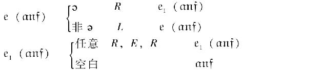
由此得出e1（anf）是
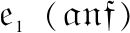
的一个m匹配，当准备好开始工作的时候，运行穿过的纸带在一个F方格上带着符号ə且在相邻的E方格；在这以后，只在F方格，出现机器的S.D跟着成对的冒号“：：”（一个单个的记号，在F方格）．这S.D含有一些用分号分隔开的指令．
每一条指令由五个部分组成
（ⅰ）“D”跟着一连串的字母“A”，描述了有关的m匹配．
（ⅱ）“D”跟着一连串的字母“C”，描述了被扫描的记号．
（ⅲ）“D”跟着另外一连串的字母“C”，描述记号里面被扫描的记号是要改变的．
（ⅳ）“L”，“R”，“N”，描述机器是向左，向右，或者原地不动．
（ⅴ）“D”跟着一连串的字母“A”，描述最后的m匹配．
机器可以打印“A”，“C”，“D”，“0”，“1”，“u”，“v”，“w”，“x”，“y”，“z”．它的S．D由“；”，“A”，“C”，“D”，“L”，“R”，“N”形成，
附属的骨架表
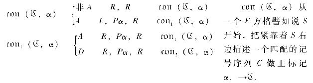
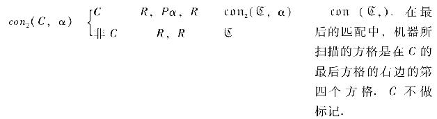
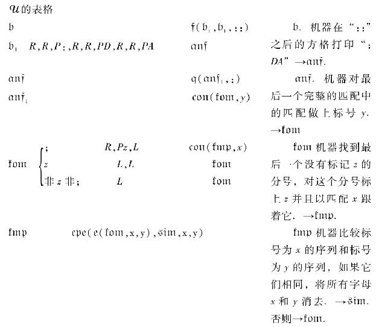
anf.从长远来看，与最后一个匹配相关联的最后一个指令已经找到，在这以后，它可以被认为是跟在最后一个分号后面做标记z．→sim．
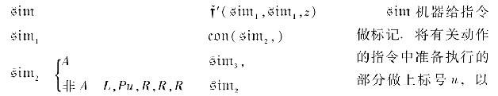
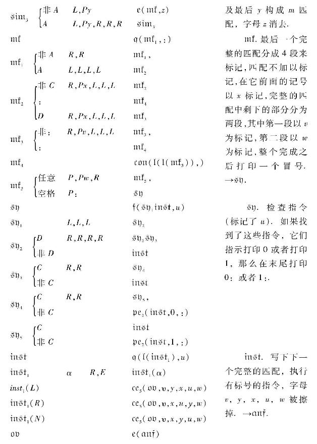
或许有人认为，关于实数是不可数的论证[4]可同样证明可计算数和序列也是不可数的，例如，可以认为可计算数的极限必定是可计算的，显然，如果可计算数的序列是由某些规则来定义的，这才是正确的．
或者我们可以应用对角线过程，“如果可计算序列是可数的，设αn是第n个可计算序列，并且φn（m）是αn的第m个数字，设β是一个数字序列，它的第n个数字是1-φn（n）．因为β是可计算的，存在一个数K使得1-φn（n）=φK（n）对所有n都成立，令n=K，我们得到1=2（φK（K））．这样一来，1是一个偶数．这是不可能的，因此可计算序列是不可数的．”
这个推断的错误在于假设β是可计算的，它或许会是对的，如果能够用有限的方法来枚举可计算序列，但是问题是，枚举可计算序列等价于发现一个给定的数是否是一个无循环机器的D.N，而我们并没有一般的过程来在有限多步之内做这件事，实际上经过正确地运用对角线过程论证，我们可以证明这样的过程是不存在的．
最简单和最直接的证明就是指出，如果这样的过程存在，那么就有一个计算β的机器，这个证明虽然完全没有问题，但是它会使读者感觉到“一定是弄错了”，我将要给出的证明就没有这方面的缺陷，并且还对“无循环”设想的重要性做一些深入的观察，它与构造β没有关系，但是与构造β′有关，它的第n个数字是φn（n）．
让我们假设存在一个这样的过程；那就是说，我们可以发明一个机器
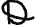
使得，当提供任意计算机器M的S.D，它就试验这个S.D，如果M是循环的机器，那么就给这个S.D标上记号u，如果M是无循环的机器，那么就给这个S.D标上记号s.将机器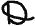
和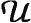
组合起来，我们可以构造一个机器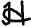
用以计算序列β′．机器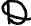
需要一条带，我们可以假设它的E方格所使用的记号与F方格所使用的记号完全不同，并且当它得到了结论时所有机器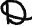
的工作痕迹都要消去．机器
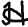
的动作分为若干个段落，在开头的N-1个段落，除了其他事情之外，机器写下1，2，…，N-1并且利用机器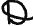
试验，其中的某个数譬如说R（N-1）个数被发现是无循环机器的D.N．在第N个段落机器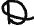
试验数N．如果N满足要求，也就是说，如果它是无循环机器的D.N，那么令R（N）=1+R（N-1），其中D.N为N的序列的前R（N）个数字也就计算出来了．第R（N）个数字（就是N）可以写下来作为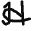
所计算的序列β′的一个数字．如果N不满足要求，那么R（N）=R（N-1），并且机器运行到第（N+1）个段落．从的构造过程我们可以看出，是无循环的，每一个的运作段落都会在有限多步结束．这是因为由我们关于的假设，确定N是否满足要求会在有限多步之内完成．如果N不满足要求，那么第N个段落已经结束．如果N满足要求，那么机器M（N）的D.N就是N，M（N）就是无循环的机器，因此它的第R（N）个数字可以在有限多步之内计算完成，当这个数字计算完成并且写了下来作为序列β′的第R（N）个数字，第N个段落结束，所以是无循环的，
现在设K是的D.N．在第K个计算段落机器如何运作呢？他要试验K是不是符合要求，给出一个是“s”或者“u”的判决，由于K是的D.N，并且是无循环的，判决不可能是“u”，另一方面判决也不可能是“s”，因为如果这样，那么在的第K个段落的动作中，被要求计算D．N是K的机器的开头R（K-1）+1=R（K）个数字，然后写下第R（K）个数字作为的计算序列中的一个数字．计算前R（K）-1个数字可以没有什么问题要执行，但是计算第R（K）个数字的指令中却有”计算H所计算的前R（K）个数字并且写下第R（K）个数字”的条文．所以第R（K）个数字将永远找不出来．也就是说是循环的机器，矛盾于我们在上一节的发现，也矛盾于“s”的判决，所以两种判决都不可能并且不可能有机器
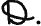
．我们可以更进一步指出不存在机器E，对它当给出一个任意的机器M的S.D时机器是否能打印一个给定的符号（譬如说0）．
我们将首先证明，如果存这样一个机器E，那么就存在一个一般的过程来决定是否存在一个机器M打印0无限多次．设M1是一个机器，它和M打印同样的序列．所不同的是当机器M在打印第一个0的位置停留时，M1打印0．M2是要将开头的两个0替换成0，等．所以，如果M打印
ABA01AAB0010AB…，
那么M1打印
ABA01AAB0010AB…，
并且M2打印
ABA01AAB0010AB…．
现在设F是一个机器，当它被提供机器M的S.D时，将连续地写下机器M，M1和M2的S.D，…（有这样的一个机器）．我们将F和E组合起来得到一个新的机器G．在G的动作中首先用F来写下M1的S.D，然后用E来试验它，如果它发现M永远不打印0那么写下∶0∶；然后F写下M1的S.D，并且再对这个S.D进行试验，如果它发现M1永远不打印0那么写下∶0∶；……如此进行下去，现在让我们用E来试验G．如果发现G永远不打印0，那么M打印0无限多次；如果发现G有时打印0，那么M不会打印0无限多次．
类似地，存在一个一般的过程以决定是否M打印1无限多次，将这些过程组合起来，我们可以得到一个过程以试验是否机器M打印无限多个数字，也就是说，我们有一个确定机器M是否无循环的过程，所以机器E不存在．
整个小节中使用了表述“存在一个一般的过程以确定……”它等价于“存在一个机器以确定……”，它们的用法是合理的当且仅当我们关于“可计算”的定义是合理的，因为每一个“一般过程”的问题都可以表示成关于一个一般过程用来确定一个整数n是否具有性质G（n）的问题，［例如G（n）的含义可能是“n是可满足的”或者“n是一个可证明公式的哥德尔表示式”］，并且这等价于计算一个数，它的第n位数字是1，如果G（n）成立；或者它的n位数字是0，如果G（n）不成立．
还没有尝试证明“可计算数”包括所有自然地被认为是可计算的数．从根本上说，所有可以给出的论断必然求助于直观，并由于这个原因，在数学上也颇为难，论断的真实问题是“什么过程在计算一个数中可以被执行？”
我将要用到的论断有三种类型．
（a）直接来源于直观．
（b）两个定义等价的证明（在新定义有更大的直观来源的情形）．
（c）给出一大类的数，它们是可计算的．
一旦所有可计算数都是“可计算的”得到认可，同样特征的其他几个命题也就得出，特别地，它推断出，如果有一个一般的过程用以决定一个希尔伯特函量演算是可以证明的，那么这个决定可以由一个机器来执行．
I．［（a）型］这个论断仅仅是§1的思想的精确化．
计算通常是在纸上写某些记号来做．我们可以假设这张纸是像儿童的算术书那样被划分为方格．在初等算术里纸的二维特征有时被使用，但是这种用法通常是可以避免的，并且我想大家会同意纸的二维特征对计算不是非要不可的，那么我假设计算是在一条划分为方格的一维纸带上执行，我还假设可以打印的记号的数目是有限的，如果我们允许无限多个记号，那么就有差别极其微小的记号．[5]这个对符号数目的限制的效果并不很严重，总是可能在单个符号的地方用符号序列，所以一个阿拉伯数字例如17或者999999999999999通常地是当做一个单个符号来处理，类似地，在任何欧洲语言中，字是当做一个单个符号来处理（不过，中文则尝试用可数无限多个记号）．从我们的观点来看，单个和复合的符号的区别在于复合的符号如果太过于长，不可能一眼就看清，这是根据经验得来的，我们不能一瞥就说出9999999999999999和999999999999999是否相同．
在任何时刻，计算机的行为是由他所观察的记号，以及他在该时刻的“思想状态”来确定的，我们可以假设在一个瞬间计算机可以观察的记号或者方格数目有一个界限B．如果他想观察得更多一些，他必须继续观察．我们也假设被考虑的思想状态的数目也是有限的，这一点的理由和限制记号的数目具有相同的特征，如果我们允许无限多个思想状态，它们之中有些就会“非常接近”以至于混淆，再次，这个限制不至于严重地影响计算，因为使用更多复杂的思想状态可以用在带上多写些记号来避免，
我们想象将计算机所做的运转分解成“简单的动作”，它们是如此的初等，使得不容易再想把它们进一步分开，每一个这样的运作是由计算机的物理系统和它的带上的一些变化组成的，如果我们知道纸带上的记号序列，它们正在被计算机（可能是按一定的顺序）所观察，也知道计算机的思想状态，我们就知道系统的状态，我们可以假设在一个简单的动作中不改变超过一个以上的记号，任何其他变化可以设定为几个这一类简单变化，关于它的记号可能会以这种方式更换的方格的情况与关于被观察的方格相同，因此，不失一般性，记号被更换的方格总是被观察的方格．
除了改变这些记号之外，简单的运作必须包括改变被观察方格的分布．新的被观察方格必须被计算机很快地认出，我想假设它们只能是离最接近的正前方被观察方格的距离不超过一个固定总数的方格．我们说每一个新的被观察方格是在正前方的被观察方格L个方格之内．
关于“直接可认出”，可能会想有其他类型的方格是直接可认出的．特别地，标记有特殊记号的方格可以认为是直接可认出的，现在如果这些方格仅仅被单个符号所标记，这种符号只有有限多个，并且我们不想添加这些有标记的方格到被观察的方格来搞乱我们的理论，如果，从另一方面讲，它们用一序列记号来标记，我们不能将认知过程看成是一个简单的过程，这是一个需要加以说明的基本点，在大多数的数学文章中方程式和定理是编号的，通常地，这种号码不会超过（譬如说）1000.因此可能从它的号码一眼就认出这个定理，但是如果文章很长，我们可能用到定理157767733443477；而在文章的后面我们可能发现“…所以（应用定理157767733443477）我们得到……”，为了弄清哪一个是有关的定理，我们必须逐个符号进行比较，可能还要用铅笔来逐个剔除符号以免某一个符号被计算两次，如果不管这个，还有人认为存在其他的“直接可认出”的方格，只要不搞乱我的论点，这些方格可以由某些过程来找到，而我这种类型的机器有这个能力就可以了，这个想法在后面Ⅲ展开，
因此简单的运作必须包含：
（a）在被观察的方格中的一个改变记号．
（b）将一个被观察方格改变成与前面被观察的某一个方格距离L个方格之内的另一个方格．
有可能这些变化必须连带地改变思想状态，所以最一般的单个运作必须看成是下面的一个：
（A）可能的记号变化（a）连同一个可能的思想状态的变化．
（B）可能的被观察的方格变化（b）连同一个可能的思想状态的变化．
实际执行的运作是由计算机的思想状态和被观察的方格来确定的，特别是，它们确定运作被执行之后的思想状态．
我们现在可以构造一个机器用以做这个计算机的工作，每一个计算机的思想状态对应于机器的一个m匹配，机器扫描方格B对应于B方格被计算机所观察，再任意动作机器能改变一个在被扫描的方格上的记号或者能改变任意一个被扫描的方格到另外一个方格距离其他的一个被扫描的方格不超过L个方格．做完的这个动作及跟着的匹配是由被扫描的记号和m匹配所确定，刚才描述的机器和§2所定义的机器没有很大的区别，并且对应于任意一个这种类型的机器，可以构造一个计算同样序列的计算的机器，那就是说用计算机来计算序列．
Ⅱ.［类型（b）］．
如果希尔伯特函量演算的概念[6]是修正了的也是系统化了的，并且也只用到有限数个记号，那么，就可能构造一个找到所有演算中可以证明的公式的自动机[7]K．[8]
现在假设α是一个序列，并且我们以Gα（x）来表示命题“α的第x个数字是1”，所以-Gα（x）[9]的含义是“α的第x个数字是0”，进一步假设我们能够找到一个性质的集合，它定义序列α并且它也能用Gα（x），命题函数N（x）和F（x，y）来表示，其中N（x）的含义是“x是一个非负整数”，F（x，y）的含义是“y=x+1”，当我们将所有这些命题用合取连接起来，我们将得到一个公式，譬如说A．它定义了α．A的各项中必须包含皮亚诺公理的各个必要部分，也就是说
（u）N（u）＆（x）（N（x）→（y）F（x，y）＆F（x，y）→（N（y））．
我们把它简单记作P．
当我们说“A定义α”，我们的意思是-A不是一个可以证明的公式，并且，对每一个n，下面的两个公式An或者Bn之一是可以证明的．
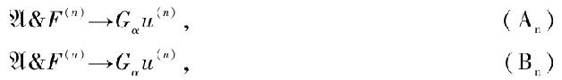
其中F（n）的含义是F（u，u′）＆F（u′，u″）＆…F（u（n-1），u（n））．
这样我就说α是一个可计算序列：计算α的机器Kα可以从K经过一个相当简单的修正而得到．
我们将Kα的动作划分为段落．第n个段落是要找到α的第n个数字，在第n-1个段落结束之后两个冒号被打印在所有记号之后，并且所有以后的工作完全是做在这两个冒号的右边．第一步是写下字母A，接着写公式（An），然后B，接着写（Bn）．然后机器Kα开始做机器K的工作，每当找到一个可以证明的公式就拿它来与（An），（Bn）进行比较，如果它和（An）一样，那么就打印数字“1”，并且第n段落的工作结束，如果它和（Bn）一样，那么就打印数字“0”，第n段落的工作也结束．如果它和两者都不同，那么K的工作从它中断的地方重新开始，迟些或者早些就会到达一个公式（An）或者（Bn）；这可以从我们关于α，A的假设以及K的特性推断出来，所以第n个段落最终一定会结束，Kα是无循环的机器，α是可计算的．
也可以证明，按这种方法用公理来定义的数包含了所有的可计算数，这个可以用函量演算的条款描述计算的机器来完成．
需要记住，我们将比较特别的含义附着于词语“A定义α”，可计算数不包括所有（在普通意义之下）的可定义数，设δ是一个序列，它的第n个数字是1或者0，代表n是不是可满足的．由§8一个定理的直接推论，δ是不可计算的，它是（到目前为止我们所知道的）每一个δ所指定的数字都是可计算的，但不是由统一的过程来计算的，当足够多的δ的数字计算完成之后，为了得到更多的数字需要一个从本质上是新的方法．
Ⅲ．这可以被看成是一个Ⅰ的化简或者是Ⅱ的推论．
像在Ⅰ那样，我们假设计算是在一条纸带上执行；但是我们避免引进“思想状态”而是考虑它的更加物化和确定的副本，总是可以让计算机中断它的工作走开并且整个忘掉它，然后在以后的某一个时候回来继续工作，如果它想这样做，它必须留下一条注释指令（用一种标准的方式写下来）解释怎样继续进行工作，这条注释就是“思想状态”的副本，我们将假设计算机就是这样断断续续地工作，它永不在一个座位上做多于一步，注释指令必须能够使他执行一步并且写下下一步的注释，所以计算进行的任何阶段完全由注释指令和带上的记号来确定，那是，系统的状态可以用一条单个表示式（记号的序列）和注释指令来描述，这个表示式是由带上的一些记号跟着一个Δ（假设在其他地方没有用到过）再跟着一个注释指令，这个表示式可以叫做“状态公式”，我们知道这个状态公式在任意给定的阶段是被做上一步的状态公式所确定的，我们假设这两个公式之间的关系是可以在函量演算中表示的，换一句话说我们假设有一个公理A，它用任何阶段的状态公式对于前一阶段的状态公式的关系来表示管理计算机动作的规则，如果是这样，我们可以构造一个机器来写下相继的状态公式，并且以此来计算所要求的数．
从定义一个整数变元的可计算函数和一个可计算变元的可计算函数开始会是有用的．定义一个整数变元的可计算函数有很多等价的方法．可能最简单的办法如下，如果γ是一个可计算序列，其中0出现无限多次[10]，并且n是一个整数，那么让我们定义ξ（γ，n）作为γ的在第n个0和第n+1个0之间的1的数目，那么φ（n）是可计算的，如果φ（n）=ξ（γ，n），对所有n和某些γ．一个等价的定义是这样的．设H（x，y）的含义为φ（x）=y．那么，如果我们能够发现一个无矛盾的公理Aφ，使得Aφ→P，并且对每一个整数n，存在一个整数N，使得
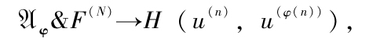
并且使得，如果m≠φ（n），那么对某些N′，
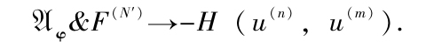
那么φ可以说是一个可计算函数．
我们不能一般地定义一个可计算实数函数，因为没有一个一般的方法来描述一个实数，但是我们可以定义一个可计算变元的可计算函数．如果n是可以满足的，设γn为M（n）所计算的数，并且设
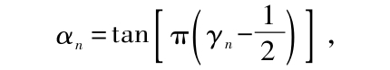
γn只有两种可能γn=1或者γn=0，两种都能使αn=0．因此，只要n跑过符合要求的数，αn就跑过可计算数．[11]现在设φ（n）是一个可计算函数，它可以被证明是对任意符合要求的变元，它的函数值是符合要求的．[12]那么由f（αn）=αφ（n），定义的函数f是可计算函数，并且所有一个可计算变元的可计算函数都可以表示成这种形式．
类似地，多个变元的可计算函数，一个整数变元的可计算值函数等都可以给出定义．
我将宣布一些关于可计算性的定理，但是只给出（ⅱ）和与（ⅲ）类似的一个定理的证明．
（ⅰ）一个整数变元或者可计算变元的可计算函数的可计算函数也是可计算的．
（ⅱ）用可计算函数来递归地定义的任意一个整数变元函数是可计算的．也就是说，如果φ（m，n）是可计算的，并且r是一个整数，那么η（n）是可计算的，其中
η（0）=r，
η（n）=φ（n，η（n-1））．
（ⅲ）如果φ（m，n）是一个含有两个整数变元的可计算函数，那么φ（n，n）是一个n的可计算函数．
（ⅳ）如果φ（n）是一个可计算函数，它的值总是0或者1，那么第n个数字是φ（n）的序列是可计算的．
戴德金定理的一般形式，如果我们将其中“实数”通篇改为“可计算数”，是不成立的，但是它的下面形式是成立的：
（ⅴ）如果G（α）是一个可计算数的命题函数并且
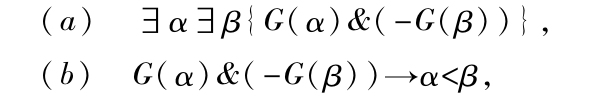
并且存在一个确定G（α）值的一般过程，那么存在一个可计算数ξ，使得
G（α）→α≤ξ，
-G（α）→α≥ξ．
换句话说，对任意段落的可计算数这个定理成立，它们使得存在一个确定一个数属于哪一类的一般过程．
由于这个对戴德金定理的限制，我们不能说一个有界上升序列的可计算数的极限仍然是可计算的，这一点可以考虑下面的序列来理解
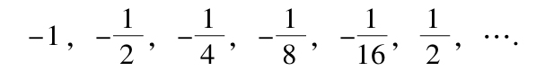
另一方面，（ⅴ）使我们能够证明
（ⅵ）如果α和β是可计算的，并且α<β，并且φ（α）<0<φ（β），其中φ（α）是一个可计算上升连续函数，那么存在一个唯一的可计算数γ，满足α<γ<β并且φ（γ）=0．
我们说一个可计算数的序列βn是可计算地收敛的，如果有一个可计算变元 的可计算整值函数N（），使得我们可证明，如果>0并且n>N（），m>N（），那么|βn-βm|<．
的可计算整值函数N（），使得我们可证明，如果>0并且n>N（），m>N（），那么|βn-βm|<．
这样我们就可以证明
（ⅶ）一个幂级数，若它的系数形成一个可计算数的可计算序列，则该幂级数是在所有它的可计算区间内部的可计算点收敛的．
（ⅷ）可计算收敛序列的极限是可计算的．
运用“一致收敛”的明确定义：
（ⅸ）一个可计算函数的一致可计算收敛的可计算序列的极限是一个可计算函数，所以
（ⅹ）一个幂级数它的系数形成一个可计算序列，它的和是在它的收敛区间内的可计算函数．
由（viii）以及π=
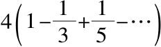
，我们可以推演出π是可计算的．由e=
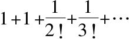
，我们可以推演出e是可计算的．由（ⅵ），我们可以推演出所有实代数数是可计算的．
由（ⅵ）以及（ⅹ），我们可以推演出所有贝塞尔函数的实的零点是可计算的．
（ⅱ）的证明．
设H（x，y）的含义是“η（x）=y”，并且设K（x，y，z）的含义是“φ（x，y）=z”，Aφ是φ（x，y）的公理．我们以Aη表示下面的式子：
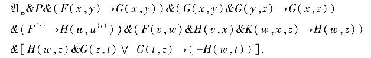
我将不给出Aη的相容性证明．这样的一个证明可以利用希尔伯特和博尼斯所著“Grundlagen der Mathematik（Berlin，1934）”中的办法构造出来．从含义上看相容性也是清楚的．
假设对某些n，N，我们已经证明了
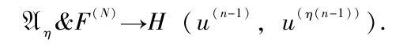
那么对于某一个M，
并且
所以
也有
所以对每一个n，这种形式的某些公式
是可以证明的，还有，如果M′≥M，并且M′≥m，m≠η（u），那么
并且
所以
因此我们关于可计算函数的第二个定义的条件得到满足．结论为η是一个可计算函数．
（iii）的一个修正形式的证明．
假设给出一个机器，它启动时带上的F方格子开头的两个记号是əə，跟着是一个任意多个“F”字母所组成的F方格上的序列，并且m匹配是b，它要依赖于数字n和“F”字母计算序列γn.如果φn（m）是γn的第m个数字，那么其第n个数字是φn（n）的序列β是可计算的．
我们假设的表已经用这种方式写出，每一行只有一个动作出现在动作列．我们也假设，Θ，0和1不在表中出现，并且我们将通篇的ə替换成Θ，0替换成0，并且1替换成1．更多的替换可以列出．
替换成
以及
替换成
表上再加上其他的行
还有类似的行，以v替换u，以1替换0，再加上下面的行
我们这样就得到机器的表，它计算β，初始的m匹配是c，并且初始的扫描符号是第二个ə．
§8的结果有一些非常重要的应用．特别地，它们可以用来证明希尔伯特判定问题是无解的．目前我们把自己限定于这个特殊问题的证明上．对这个问题的表述请读者可参看希尔伯特和阿克曼所著Grundzüge der Theoretischen Logik（柏林，1931），第三章．
因此我打算证明不可能有确定一个绐定的函量演算K的公式A是否可以证明的一般过程，也就是说没有这样的机器，如果向它提供任意的一个公式A，机器会最终判定这个公式是否是可以证明的，
我也许应该提醒我要证明的内容与众所周知的哥德尔[13]的结果有很大的不同，哥德尔（在数学原理的形式主义之内）证明了存在命题A，使得A或者-A都是不可以证明的．作为这个的一个结论，数学原理的（或者K的）相容性也不可能在形式主义之内加以证明，另一方面，我要证明没有能告诉我们一个给定的公式A是在K之内可以证明的，或者也可以同样地说，由K添加一条额外的公理-A所组成的系统是否相容也是不可以证明的．
如果哥德尔所证明的反面能够加以证明，也就是说，如果对每一个A，A或者-A是可以证明的，那么我们就可以得到判定问题的直接解．因为我们可以发明一个机器K，它将一个接着一个地证明所有可以证明的公式．迟早K会达到A或者-A．如果它达到A，我们就知道A是可以证明的，如果它达到-A，那么，由于K是相容的（希尔伯特和阿克曼，p.65），我们就知道A是不可以证明的．
由于K中没有整数，证明看起来是有些冗长，基本的设想是很直接的．
对应于每一个计算的机器M，我们构造一个公式Un（M），并且我们证明，如果我们有一般的方法来确定Un（M）是可以证明的，那么就有一般的方法来确定M在某一个时候会打印0．
证明中所用的命题的函数的解释如下：
（x，y）解释为“在（M的）完整匹配x里，在方格y的记号是“S”．
I（x，y）解释为“在（M的）完整匹配x里，方格y被扫描”．
（x，y）解释为“在（M的）完整匹配x里，m匹配是qm”．
F（x，y）解释为“y是x的直接后继元素”．
Inst是下面式子的简记号
Inst和Inst是其他的一些类似构造的表示式．
让我们把M的描述按§6的第一种标准型表示出来．这个描述由一些诸如“qiSjSkLql”（或者与R或者N代替L）的表示来组成．让我们构成所有相应的表示式类似于Inst并做它们的逻辑和式．这个式子我们把它记作Des（M）．
公式Un（M）成了
［N（u）＆…＆Des（M）］可以简记为A（M）．
当我们按上面所给出的含义来替换时，我们发现Un（M）可以做这样的解释“在M的某一个完整匹配中，S1（就是0）在带上出现．”和这一点相对应，我证明
（a）如果S1在M的某一个完整匹配的带上出现．”那么Un（M）是可以证明的．
（b）如果Un（M）是可以证明的，那么S1在M的某一个完整匹配的带子出现．
当这些做完了以后，定理的剩余部分就是明显的了．
引理1 如果S1在M的某一个完整匹配的带上出现，那么Un（M）是可以证明的．
我们要指出怎样证明Un（M）．假设在第n个完整匹配的带上出现的记号序列是Sr（n，o），Sr（n，1），…，Sr（n，n），后面的记号全部都是空格，被扫描的记号是第i（n）个，并且m匹配是qk（n）．然后我们就可以形成这个命题．
对它我们可以简记为CCn．
和以前一样F（u，u′）＆F（u′，u″）＆…＆F（u（r-1），u（r））简记为F（r）．
我们将证明所有形如A（M）＆F（n）→CCn（简记为CFn）是可以证明的．CFn的含义是“M的第n个完整匹配是如此如此”，这里“如此如此”就是实际上的M的第n个完整匹配，所以CFn应该是可以证明的．
CF0肯定是可以证明的，因为在完整的匹配中所有的记号都是空格，m匹配是q1，并且扫描的方格是u，也就是说CC0是
由此A（M→CC0）是明显的．
下一步我们要说CFn→CFn+1对每一个n都是可以证明的．根据由第n个动作过渡到第n+1个动作机器是向左，向右移动或者是在原地停留要考虑三种情形．我们假设应用第一种情形，也就是说机器向左移动．其他应用的情形类似地可以得出．如果r（n，i（n））=a，r（n+1，i（n+1））=c，k（i（n））=b，并且k（i（n+1））=d，那么Des（M）必定含有作为它的一个项，也就是说
所以
但是
是可以证明的，所以
以及
都是可以证明的，即
CFn对每一个n都是可以证明的，现在这个引理假设S1，在某一个完整的匹配的某个地方，在M所打印的记号序列中出现；那就是，对某些整数N，K，CCN，有（u（N），u（K））作为它的一个项，因此是可以证明的．这样我们就得到
以及
我们还得到
其中N′=max（N，K）．并且因此得到
也就是说Un（M）得到了证明．
这就证明了引理1．
引理2 如果Un（M）是可以证明的，那么S1在Un（M）的某个完整匹配的带上出现．
如果我们在一个可以证明的公式中以命题函数替换函数变元，我们得到一个真的命题，特别地，如果我们替换在本节开头Un（M）含义的表格，我们得到一个真的命题，它的含义是“S1在Un（M）的某个完整匹配的带上出现．”
现在我们来证明判定问题是不可以解决的．假设不是这样的．那么就存在一个一般的（机械）过程用以确定Un（M）是否可以证明．由引理1和2，这蕴含存在一个确定M是否会打印0的过程，并且这由§8是不可能的．所以判定问题是不可以解决的．
考虑到对带有限制量词系统的公式的大量判定问题是有解的特殊情形，将公式Un（M）表示成所有量词放在前面是很有用的．Un（M）实际上可以表示成如下形式：
其中B不含有量词，并且n=6．利用一个不重要的改进，我们可以得到一个具有形式（I）的公式保有所有Un（M）的性质而n=5．
1936年8月28日添加
[1]Gödel，“Uber formal unentscheidbare Sätzc der Ptincipia Mathematica und verwanvter Systeme”，Monashefie Math Phys，38（1931），173-198．
[2]A.Church，“An unsolvable problem of elementary number theory”，American J of Math，58（1936），345-363．
[3]A.Church，“A note on the Entscheidungsproblem”，J of Symbolic Logic，1（1936），40-41．
[4]Cf.Hobson，”Theory of functions of a real variable”（2nd ed.，1921），87，88．
[5]如果我们理解一个符号是照字面在方格上打印，我们可以假设方格是0≤x≤1，0≤y≤1．符号是定义成为方格内的点集，也就是说打印机油墨所占领的集合，如果这个集合限制是可测的，又如果移动一个单位面积打印机油墨一个单位距离的费用是一个单位，而且在x＝2．y=0有无限多的油墨供应，那么，我们可以定义两个符号之间的“距离”是变换一个符号到另一个符号的费用．考虑到这个拓扑，符号形成一个条件紧致空间．
[6]通篇中概念“函量演算”的含义是有限制的希尔伯特函量演算．
[7]最自然的办法是首先构造一个选择机器（§2）来做这个工作．然后容易构造所要求的自动机器．我们总是可以假设选择就是在0与1之间选择．每一个证明就将会被一个选择序列il，i2．…，in（i1=0或者1，i2=0或者1，…，in=0或者1）所确定，于是数2n+i12n-1+i22n-2+…+in完全确定了这个证明．这个自动的机器成功地给出了证明1，证明2，证明3，……．
[8]作者发现了这个机器的描述．
[9]公式的否定是写在一个式子的前面，而不是在上面加横线．
[10]如果M计算γ，那么M是否打印0无限多次的问题和M是否无循环的问题具有同样的特征．
[11]一个函数αn可以有很多其他的不同方法定义来跑过可计算数．
[12]虽然不可能找到一个一般的过程来确定一个给定数是符合要求的，总是可以证明某些数的类是符合要求的．
[13]Loc.cit.（在上述引文中．）